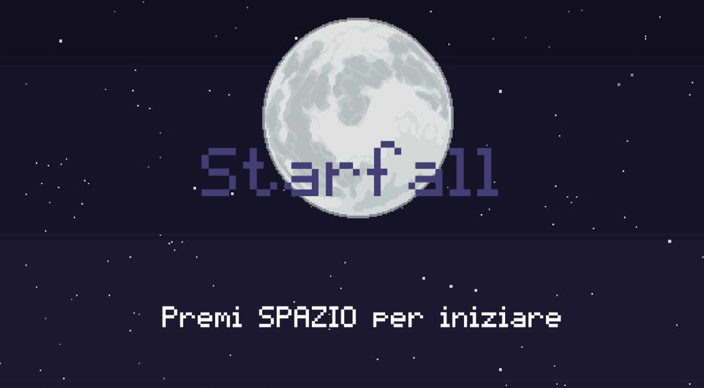
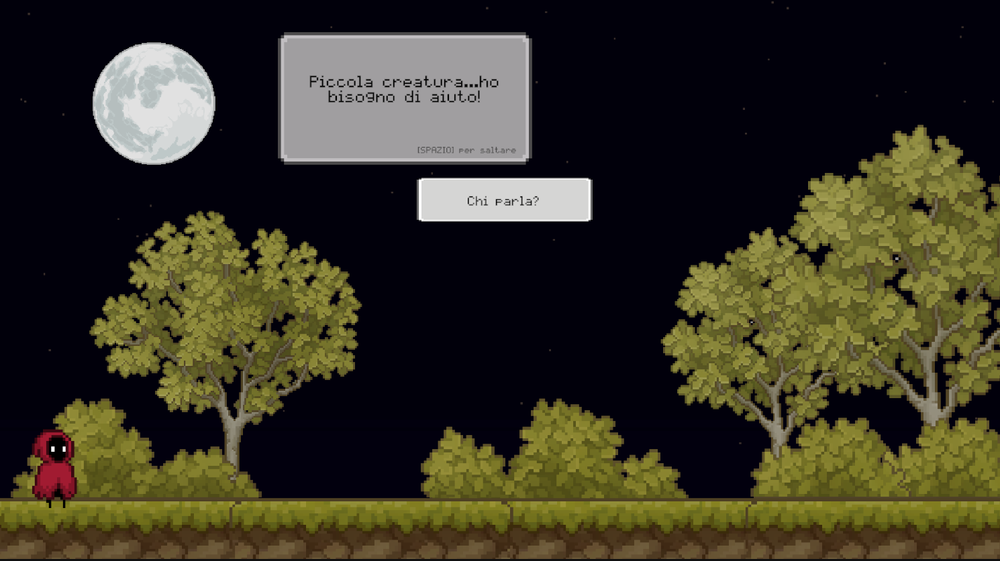
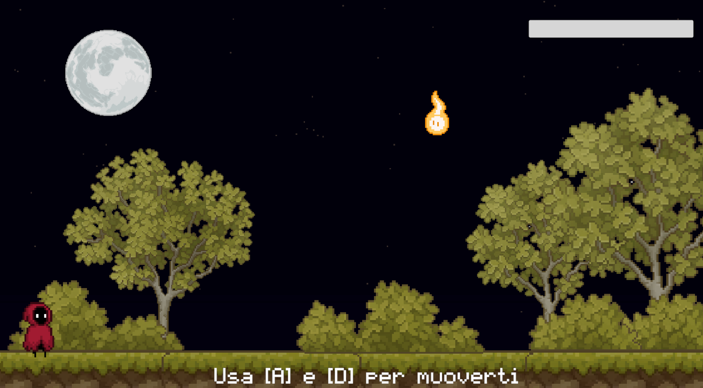
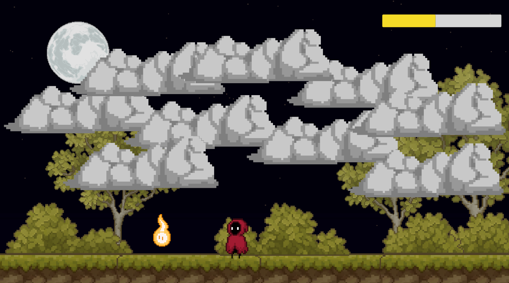
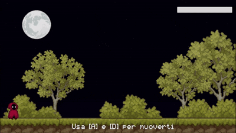
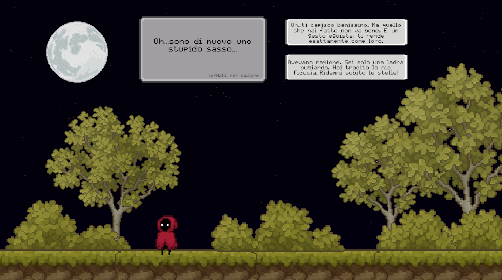

Starfall
Starfall is a 2D narrative video game that bridges the gap between active player agency and structured storytelling. Developed as my thesis project to explore human storytelling instincts and intermediality, the game challenges players with ethical choices and mechanical obstacles that directly impact the narrative flow. Driven by an integrated storytelling engine, your decisions culminate in distinct, emotionally charged endings.
Role:
Tools: